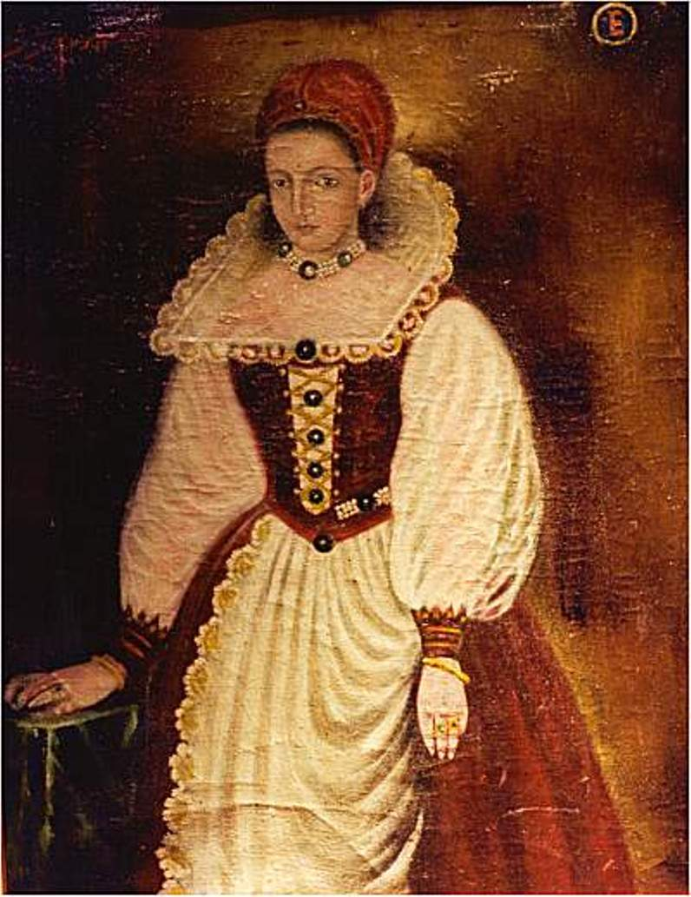

The Crimson Bath
The world locked a woman in a legend of blood and threw away the key — and she kept the legend, because the legend was the only thing that ever told the truth about what was done to her.

The Crimson Bath
The world locked a woman in a legend of blood and threw away the key — and she kept the legend, because the legend was the only thing that ever told the truth about what was done to her.
Feature map
Level-by-level features, as the figure refined them.
First Sip & Aging Presence
First Sip (passive).
Tier III · Striker (drain) · Suggested CE ability: CON · Primary verb: Drink Your technique save DC = 8 + your proficiency bonus + your CON modifier. "Living creature" excludes constructs and undead — the bath only takes from the living. You track Years Drunk: a pool (maximum = your proficiency bonus) that increases by 1 each time you reduce a living creature to 0 HP. Years fade after 24 hours if unspent — youth does not keep.
First Sip (passive). Once per turn, when you deal damage to a living creature with a weapon or unarmed attack, you regain hit points equal to half the damage dealt (rounded down). You must take to receive — no passive regeneration, ever. Aging Presence (passive aura, 10 ft). Hostile creatures within 10 ft of you have their speed reduced by 5 ft and feel their joints stiffen: they have disadvantage on ability checks made to escape grapples. The grass yellows where you stand.
Drink Deep & Crimson Vintage
Drink Deep — Bonus action · 2 CE.
Drink Deep — Bonus action · 2 CE. After you have dealt damage to a living creature this turn, you drink deeply: gain temporary hit points equal to the damage dealt (before First Sip's healing). Once per round. Crimson Vintage (spend Years). You may spend Years Drunk as a free action on your turn: - 1 Year: add 1d8 necrotic damage to one attack's damage roll (the vintage burns). - 2 Years: end one poisoned, diseased, or exhausted condition on yourself (the youth burns it out).
The Bath Overflows
Action · 4 CE.
Action · 4 CE. Blood answers blood. Each living hostile creature within 15 ft must make a CON save or take 3d6 necrotic damage (half on success) as their years flow visibly toward you — gray hairs, liver spots, a sudden stoop. You regain hit points equal to half the total damage dealt by this feature. Aging Presence grows (passive). The aura extends to 15 ft; speed reduction becomes 10 ft. While you hold 4+ Years Drunk, hostiles in the aura also have disadvantage on DEX saving throws — their bodies betray them.
The Countess's Due
Reaction · 5 CE · Once per round.
Reaction · 5 CE · Once per round. When a living creature within 30 ft of you dies, you drink the moment itself: gain 2d8 + your CON modifier temporary hit points and +1 Year Drunk. You feel the exact second the years change hands. It is, witnesses say, the only time she ever looks peaceful.
Maximum, Domain, or equivalent.
Capstone material.
Eternal Vintage (Maximum)
The Last Bath — Action · 10 CE. You draw the bath around you. Each living hostile creature within 30 ft must make a CON save or take 8d6 necrotic damage (half on success). You regain hit points equal to the total damage dealt. Each creature reduced to 0 HP by this feature grants 2 Years Drunk instead of 1. Your Years Drunk maximum becomes twice your proficiency bonus.
Never Old, Never Caught
Capstone. The vow's promise, fulfilled in flesh: - You are ageless: immune to magical aging, disease, and poison (the blood is always fresh). - Once per long rest, when you would be reduced to 0 hit points, you may instead discard all Years Drunk and return with 1 hit point per Year discarded — the bath gives back what was taken. If you held no Years, this does nothing. Keep the vintage close.
Build-defining options.
Historical-figure techniques grant no feats — the figure's art is complete as written, and the builder's feat picker excludes these techniques. Take the progression as the build.